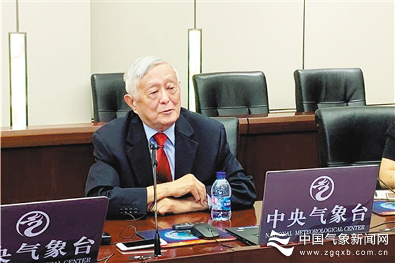

70年前，16岁的李泽椿响应国家号召，报名参军，从此与气象结缘。
70年后，身为中国工程院院士、气象学家的他，虽已头发花白但仍精神矍铄，谈起自己奉献一生的气象事业，依然热情澎湃。
结缘气象 锚定初心
想当年，初入伍的李泽椿被安排到中国人民解放军成都西南军区空军气象训练班学习气象观测。在学习专业的同时，年轻的李泽椿接受了共产主义的熏陶，初步认识到党为人民服务的宗旨和人民军队的光荣传统。
李泽椿在解放军成都西南军区空军气象训练班学习时期留影。资料图
训练班结业后，李泽椿被分配至兰州西北军区司令部气象处。“那时候想得很简单，跟着中国共产党，为人民服务，让人民过上好日子。”正是怀着这样的信念，他接受了一项新任务——去陕南秦岭大巴山区建立气象站，为军事气象特别是进藏航线提供气象保障。
当时的路途是不通公路铁路的，他与战友携带百叶箱、气压表等仪器装备，徒步从汉中出发，翻山越岭，踏崎岖山路，穿羊肠小道，硬是走了四天才到达陕南略阳。
山区的气象站建起来后，李泽椿不仅要当气象观测员，还要兼做电台摇机员发送气象报告。每当遇到雷雨天气、报告发不出时，他总会不住地摇机直至发报成功，即使累得满头大汗、腰酸背痛也不停手。大山里的生活很清苦，虽然战士们都是从城市来的学生兵，但大家并没有“城市娃”的娇气，在克服困难团结一致做好工作的同时，努力学习，钻研技术。
经年累月的气象观测和知识积淀，为他日后的研究工作打下了坚实基础。1956年，李泽椿顺利考入北京大学物理系气象专业，并于1962年师从谢义炳先生攻读研究生课程，继续深造。1961年，他光荣地成为了一名共产党员。
那段青葱岁月对青年李泽椿意义重大，短暂而宝贵的军旅时光让他树立了影响一生的共产主义人生观、世界观、价值观。结缘气象，他无怨无悔；锚定初心，他对党的信仰始终如一。
艰苦奋斗 实现突破
研究生毕业后，李泽椿来到中央气象台，正式成为一名气象预报员。此后的几十年，他没有离开过业务一线。
到现在，李泽椿还记得20世纪70年代发生在河南的一场暴雨：那次过程，雨量相当于河南省年平均降雨量的两倍。面对被冲断的铁路和被迫中止的公路运输，当时的他却无能为力。
李泽椿很痛心，他深知以当年的技术，确实预报不出来。就算报出来，以当时的信息技术也无法及时送达千家万户。痛定思痛，从那时起，作为中央气象台预报组组长的李泽椿就跟预报科技“较上劲”了。他明白，要提高天气预报准确率，尤其是灾害性天气预报准确率，更好地服务国家经济社会建设、保障人民生命财产安全，就必须要发展数值预报。
但刚开始，这段路走得很艰难。
“1978年，局党组决定建立自己的数值预报业务系统。”经过刻苦研究和反复调试，20世纪70年代末至80年代初，李泽椿带领团队与北京大学、中国科学院大气物理研究所合作，建成了我国第一个自动化短期（3天）数值天气预报业务系统。
短期数值天气预报的问题解决了，中期数值天气预报研究也提上日程。这要求更加深刻地认识大气运动规律，且对计算机运算能力的需求也是成倍增加。当时，国内高性能计算机正在研制试用，短期内难以满足计算需求。为了突破技术壁垒，一方面，李泽椿带领团队，加大与科研院校的合作，充分利用已有条件，细致安排，提前进行简化试验；另一方面，在国家支持下从国外引进超级计算机。
1990年，我国第一个中期（10天）数值天气预报业务系统投入使用，使我国成为当时少数几个能制作中期数值天气预报的国家。而这套系统正是由李泽椿团队建立的。
这是从无到有的突破，对气象保障和国家安全来说意义重大。对此，李泽椿却保持着谦逊态度：“我只是团队一分子，只想踏踏实实把事做好。这么多年来，我始终铭记气象工作的根本宗旨，就是保障国家安全，做好防灾预警，服务人民生产生活。这是我们的初心和使命。”

李泽椿在中央气象台。资料图
求索创新 坚守初心
李泽椿认为，科技人员最重要的是有正确的科学思维方法，处处都要思索创新。年轻党员更要立足岗位，做好创新工作。
“我国是一个自然灾害特别是天气和气候灾害频发的国家。数值预报研究不只是要提升预报准确率，更重要的是要应用到服务民生上。”他是这么说的，也是这样做的。
20世纪90年代以来，作为首席科学家，李泽椿带领团队攻关建成我国台风、暴雨灾害性天气数值天气预报业务系统，并将并行计算技术用于数值天气预报，有效解决计算效率问题，为天气预报提供了新技术。
“有需要，有条件，要找到机会做事。”这是李泽椿在21世纪初退出工作一线后的态度。他总感觉自己做得还不够，面对气象这个极其庞杂的大气物理工程系统，还有很多科学问题需要深入研究。
近年来，他仍然积极主持、参与国家战略咨询科研工作，完成多项中国工程院国家重大咨询研究项目，针对水资源利用、国家安全及气象灾害预警及其对策研究，提出极富价值的意见和建议。
时间砥砺信仰，岁月见证初心。入党60载，李泽椿“为人民服务”的初心始终未变。现在，李泽椿最关心的是如何提高突发灾害性天气的预报准确率，做好气象科普工作，更好地服务百姓。“国家自然灾害防控体系如何建设？工程如何实施？”“气象如何更好地保障农业生产？”“人工影响天气有哪些科学道理？”……生命不息，思考不止。在他看来，防灾减灾离不开气象，老百姓也离不开气象！
（作者：黄彬 贾辰 责任编辑：张林）